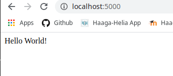
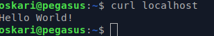
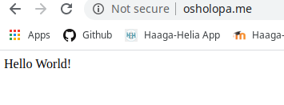
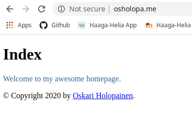
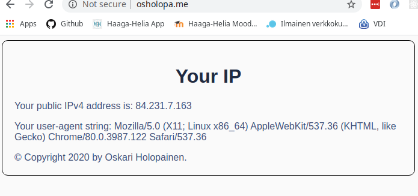

Harjoitus 5
a) Hello Flask! Tee Python Flask hei maailma kehitysympäristössä.
29.2.2020 Klo 12:00 Xubuntu 18.04.3 amd64 Lenovo Legion Y520
Aloitin asentamalla flaskin komennoilla:
sudo apt-get updatesudo apt-get -y install python3-flask
Tein ohjelmalle kansion komennolla mkdir /home/oskari/Documents/helloapp.
Sitten loin python-tiedoston komennolla nano /home/oskari/Documents/helloapp/hello.py.
Tallensin tiedostoon seuraavan koodinpätkän:
from flask import Flask
app = Flask(__name__)
@app.route("/")
def hello():
return "Hello World!"
app.run(debug=True)
Menin komentokehotteella kansioon ja käynnistin ohjelman komennolla python3 hello.py.
Kehityspalvelin käynnistyi porttiin 5000:
b) Tuotanto-Flask. Tee tuotantotyyppinen asennus Flaskista käyttäen Apachen WSGI-modulia.
29.2.2020 Klo 12:38 Xubuntu 18.04.3 amd64 Lenovo Legion Y520
Otin yhteyden palvelimelle komennolla ssh oskari@142.93.108.95
Asensin apachen komennolla sudo apt-get -y install apache2
Muutin oletussivua tarkistaakseni että palvelin oikeasti toimii:
echo "Apache works"|sudo tee /var/www/html/index.htmlcurl localhost
Muutos tuli näkyviin.
Uuden käyttäjän luominen
Asensin pwgenin komennolla sudo apt -y install pwgen
Loin uudelle käyttäjälle salasanan komennolla pwgen 30 1
Lisäsin uuden teknisen käyttäjän komennolla sudo adduser oskariwsgi
Käyttäjän salasanakirjautumista ei tarvita joten lukitsin sen komennolla sudo usermod --lock oskariwsgi
Lisäsin käyttäjän oskari uuden käyttäjän käyttäjäryhmään komennolla sudo adduser $(whoami) oskariwsgi
Kirjauduin ulos ja takaisin sisään komennoilla exit ja ssh oskari@142.93.108.95
aktivoidakseni muutokset
Virtual name based hosting
Ajoin komennon sudoedit /etc/apache2/sites-available/oskariwsgi.conf
Muutin tiedoston näyttämään tältä:
<VirtualHost *:80>
ServerName osholopa.me
WSGIDaemonProcess oskariwsgi user=oskariwsgi group=oskariwsgi threads=5
WSGIScriptAlias / /home/oskariwsgi/public_wsgi/oskari.wsgi
<Directory /home/oskariwsgi/public_wsgi/>
WSGIScriptReloading On
WSGIProcessGroup oskariwsgi
WSGIApplicationGroup %{GLOBAL}
Require all granted
</Directory>
</VirtualHost>
Otin uuden sivun käytttöön komennolla sudo a2ensite oskariwsgi.conf.
Poistin vanhan käytöstä komennolla sudo a2dissite 000-default.conf.
Kokeilin mitä configtest sanoo konfiguraatiosta komennolla apache2ctl configtest
Sain virheilmoituksen Invalid command 'WSGIDaemonProcess', perhaps misspelled or ..
WSGI:n asennus
WSGI:tä ei ole vielä asennettu. Asensin wsgi:n komennolla sudo apt-get -y install libapache2-mod-wsgi-py3
Kokeilin configtestiä uudestaan sain tuloksen: Syntax OK. Käynnistin palvelimen uudelleen komennolla
sudo systemctl restart apache2
Localhostissa näkyi statuskoodi 403 - Forbidden.
Ohjelmakansion käyttöoikeudet
Tarkistin, että lisäys oikeaan käyttäjäryhmään oskariwsgi oli onnistunut komennolla groups
Sitten loin kansion ohjelmalle komennolla sudo mkdir /home/oskariwsgi/public_wsgi
Vaihdoin kansion käyttöoikeudet komennolla sudo chown oskariwsgi:oskariwsgi /home/oskariwsgi/public_wsgi/
Asetin kaikille ryhmän jäsenille hakemiston, uusien tiedostojen ja alihakemistojen lukemis- kirjoitus- ja
ajamisoikeudet komennolla sudo chmod g=rwxs /home/oskariwsgi/public_wsgi/
Tarkistin, miltä localhost näytti komennolla curl -si localhost|grep title
Statuskoodi oli vaihtunut 404:ksi. Tämä johtuu siitä, ettei .wsgi tiedostoa löydy.
Loin tiedoston komennolla nano /home/oskariwsgi/public_wsgi/oskari.wsgi.
Muokkasin tiedoston näyttämään tältä:
import sys assert sys.version_info.major >= 3, "Python version too old in oskari.wsgi!" sys.path.insert(0, '/home/oskariwsgi/public_wsgi/') from hello import app as application
Tallensin tiedoston ja ajoin komennon curl -si localhost|grep title
Statuskoodi oli muuttunut 404:sta 500:ksi. Tarkistin error.login viimeisen rivin komennolla
tail -1 /var/log/apache2/error.log
Lokitiedostosta löytyi seuraavanlainen virheilmoitus: ModuleNotFoundError: No module named 'hello'
Ohjelman asennus
Moduuli täytyi siis luoda: suoritin komennon nano /home/oskariwsgi/public_wsgi/hello.py
Tein tiedostoon Hello World-ohjelman:
from flask import Flask
app = Flask(__name__)
@app.route("/")
def hello():
return "Hello World!\n"
Tarkistin miltä localhost nyt näyttää komennolla curl localhost
Ohjelma toimii:
Sama selaimessa:
Kirjauduin ulos palvelimelta komennolla exit
c) Lisää tuotanto-Flaskiin muotit (templates).
29.2.2020 Klo 13:24 Xubuntu 18.04.3 amd64 Lenovo Legion Y520
Otin yhteyden palvelimelle komennolla ssh oskari@142.93.108.95
Menin ohjelman hakemistoon komennolla cd /home/oskariwsgi/public_wsgi/
Loin hakemiston templates komennolla mkdir templates.
Vaihdoin hakemistoa komennolla cd templates/
Loin pohjamallinteen komennolla nano base.html:
<!DOCTYPE html>
<html lang="en">
<head>
{% block head %}
<link rel="stylesheet" href="style.css" />
<title>{% block title %}{% endblock %} - My Webpage</title>
{% endblock %}
</head>
<body>
<div id="content">{% block content %}{% endblock %}</div>
<div id="footer">
{% block footer %}
© Copyright 2020 by <a href="http://domain.invalid/">Oskari Holopainen</a>.
{% endblock %}
</div>
</body>
</html>
Sitten loin lapsitemplaten base.html:lle komennolla nano index.html:
{% extends "base.html" %}
{% block title %}Index{% endblock %}
{% block head %}
{{ super() }}
<style type="text/css">
.important { color: #336699; }
</style>
{% endblock %}
{% block content %}
<h1>Index</h1>
<p class="important">
Welcome to my awesome homepage.
</p>
{% endblock %}
Tämän jälkeen vaihdoin hakemistoa komennolla cd .. ja loin uuden python-moduulin komennolla
nano app.py:
from flask import Flask, render_template
app = Flask(__name__)
@app.route("/")
def templated():
return render_template("index.html")
Muokkasin tiedostoa oskari.wsgi komennolla nano oskari.wsgi:
import sys assert sys.version_info.major >= 3, "Python version too old in oskari.wsgi!" sys.path.insert(0, '/home/oskariwsgi/public_wsgi/') from app import app as application
Poistin vanhan moduulin komennolla rm hello.py
Jotta muutokset saisi voimaan, ajoin komennon touch oskari.wsgi
Muutos näkyy julkisesti selaimessa:
Suljin yhteyden komennolla exit
d) Sun IP. Tee Flask-sivu, jolla näkyy tietoja käyttäjästä.
29.2.2020 Klo 18:32 Xubuntu 18.04.3 amd64 Lenovo Legion Y520
Aloitin luomalla ohjelmalle kansion hakemistossa Documents komennolla mkdir yourip. Sitten loin
tiedoston yourip.py komennolla nano yourip.py.
Kirjoitin seuraavanlaisen ohjelman:
GNU nano 2.9.3 yourip.py Modified
from flask import Flask, request
app = Flask(__name__)
@app.route("/")
def yourip():
userAgent = request.user_agent.string
remoteAddr = request.remote_addr
return 'Your user-agent-info: {user_agent}<br><br>'.format(user_agent=userAgent)+'Your IP: {ip}'.format(ip=remoteAddr)
app.run(debug=True)
Testasin ohjelmaa localhostissa komennolla python3 yourip.py.
Ulkoasu näyttää hieman karulta ja ajattelin, että olisi hauska toteuttaa tämä hyödyntäen templateja ja niiden
perintää. Tein seuraavanlaisen pohjamallinteen kansioon templates komennoilla mkdir templates,
cd templates ja nano base.html
<!DOCTYPE html>
<html lang="en">
<head>
{% block head %}
<meta charset="UTF-8">
<meta name="viewport" content="width=device-width, initial-scale=1.0">
<link rel="stylesheet" href="{{ url_for('static', filename='css/style.css') }}" />
<title>{% block title %}{% endblock %}</title>
{% endblock %}
</head>
<body>
<div id="content">{% block content %}{% endblock %}</div>
<div id="footer">
{% block footer %}
© Copyright 2020 by Oskari Holopainen.
{% endblock %}
</div>
</body>
</html>
Sitten loin pohjamallinteen perivän lapsielementin yourip.html komennolla nano yourip.html:
{% extends "base.html" %}
{% block title %}YourIP{% endblock %}
{% block head %}
{{ super() }}
{% endblock %}
{% block content %}
<h1>Your IP</h1>
<div class="content">
<p>Your public IPv4 address is: {{userIp}}</p>
<p>Your user-agent string: {{userAgent}}</p>
{% endblock %}
Tein staattisille tiedostoille kansion static projektin juureen komennolla mkdir static, tämän
sisälle
kansion css, jonne asetin tyylitiedoston style.css:
body {
background-color: #fafafa;
border: 1px solid black;
border-radius: 10px;
color: #3d4f78;
padding: 20px;
font-family: sans-serif;
}
h1 {
text-align: center;
color: #202a40;
}
Tämä riittäköön tyylittelyjen osalta, on aika siirtää sovellus palvelimelle ja testata, toimiiko ohjelma oikeasti.
Tuotantoon siirto
Aluksi kommentoin pois viimeisen rivin tiedostosta yourip.py:
from flask import Flask, request, render_template
app = Flask(__name__)
@app.route("/")
def yourip():
userAgent = request.user_agent.string
remoteAddr = request.remote_addr
return render_template("yourip.html", userIp=remoteAddr, userAgent=userAgent)
##app.run(debug=True)
Otin yhteyden palvelimelle komennolla ssh oskari@142.93.108.95
Menin edellisen tehtävän hakemistoon komennolla cd /home/oskariwsgi/public_wsgi/. Poistin turhat
tiedostot app.py, hello.py ja hakemiston templates.
Kopioin ohjelman kansiosta Documents käsin komennolla
scp -r ./yourip/ oskari@142.93.108.95:/home/oskariwsgi/public_wsgi/.
Tulos ei ollut ihan se mitä tavoittelin, sillä juurikansio kopioitui ohjelman mukana, mutta korjasin tilanteen
palvelimen hakemistossa public_wsgi komennoilla cp -r yourip/. ./ ja rm -r yourip/
WSGI-tiedostoa täytyi vielä muokata. Tein tämän komennolla nano oskari.wsgi
import sys assert sys.version_info.major >= 3, "Python version too old in oskari.wsgi!" sys.path.insert(0, '/home/oskariwsgi/public_wsgi/') from yourip import app as application
Jotta muutokset tulevat voimaan, suoritin komennon touch oskari.wsgi ohjelman juurihakemistossa.
Avaan sovelluksen selaimessa:
Testasin vielä avaamalla osoitteen puhelimen selaimessa eri verkossa ja sain eri tuloksen. Vaikuttaa toimivan!
Suljin yhteyden palvelimelle komennolla exit